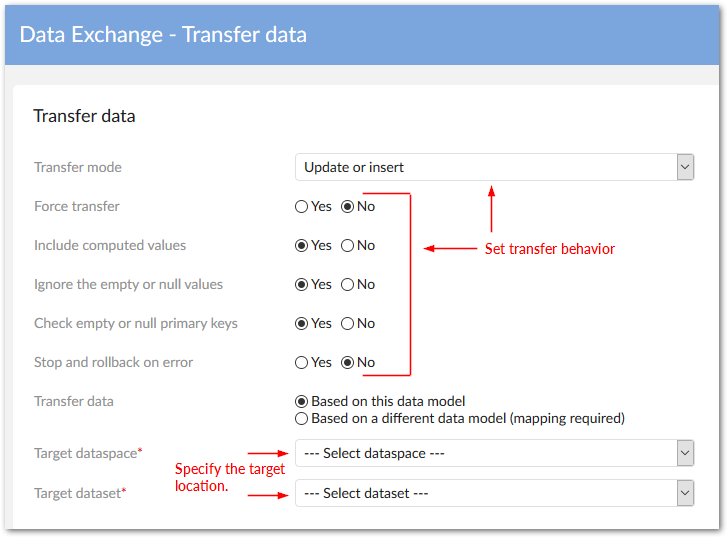
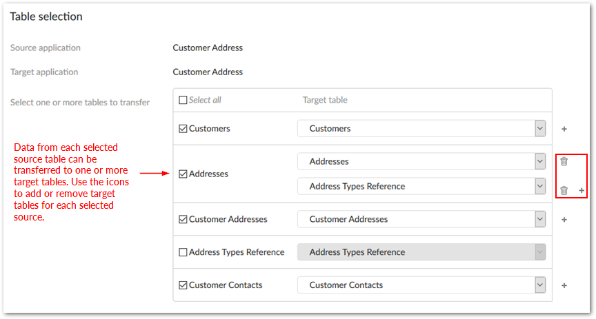

The EBX® Data Exchange Add-on allows you to transfer data between EBX® datasets and tables. The following transfer options are available depending on the source and target locations:
When the source and target locations are based on the same data model, the add-on can automatically handle required mapping. You can even use the transfer data functionality to transfer data to the same table. This can be useful if duplication is required, or you want to modify table data using a transformation.
When the source and target locations are based on different data models, an administrator must create a custom mapping configuration. See Overview for more information. Additionally, administrators must setup any configurations required for data transformation.
The following actions are available, depending on how you run the service:
When you run the service from a dataset's Actions menu, you'll have the option of transferring data from one, or more tables. Also, you can choose one or more target tables for each source table. All data from the selected tables is transferred.
When you run the service from a table's Actions menu (no records selected), you can choose one or more target tables. All table data is transferred.
If you select at least one record and run the service from a table's Actions menu, you can still choose the target table, however only the selected records will be transferred.
If you are transferring data to a table that has its primary key set to read-only, you can run the transfer in Update or insert mode. In this mode, records will be updated, but an error message will display if an attempt is made to transfer a a record that doesn't exist in the target table.
The image below highlights configuration options.

The next page in the import operation allows you to select a target table, or tables, for the transfer. The following image shows the table selection page with multiple tables.
